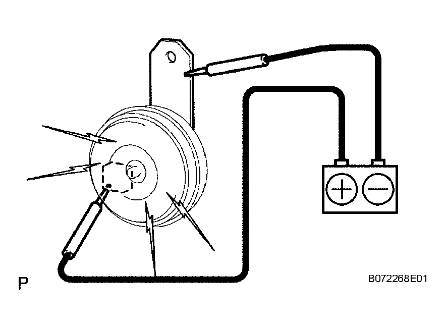

Apply battery voltage to the horn and check the operation of the horn.OK :
MEASURING AND SPECIFIED CONDITION CHART
| Measurement Condition |
Specified Condition |
| Battery positive (+) --> Terminal 1 |
Horn sounds |
| Battery negative (-) --> Horn bracket |
If the result is not as specified, replace the horn.

Courtesy of © TOYOTA, LICENSE AGREEMENT TMS1002